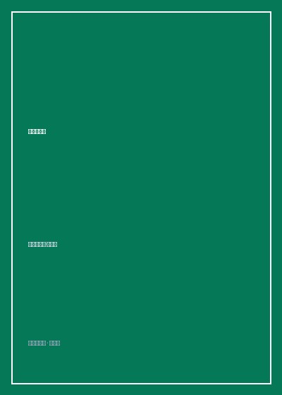

《积极心理学》

总体观点
一个世纪以来，主流心理学始终局限在‘疾病与病理学范式’之中，竭尽全力将心理健康状态从负值提升到零点（修复抑郁、焦虑与创伤），却忽略了心理学更崇高的另一半使命：探索如何让健康的人从零点迈向正值（获得蓬勃发展、丰盈人生与深刻幸福）。积极心理学是用严谨的实证科学手段，补全人类精神版图的科学运动。
幸福感（Well-being）绝非转瞬即逝的感官快乐总和，而是由积极情绪（Positive Emotions）、全情投入（Engagement/心流）、良好人际关系（Relationships）、生命意义（Meaning）与成就感（Accomplishment）共同构筑的PERMA立体模型。人类拥有强大的‘快感适应（Hedonic Treadmill）’机制，唯有基于内在性格优势与利他奉献的行动，才能产生抵御时间衰减的深层幸福。
VIA性格优势与美德分类系统（Values in Action）是积极心理学的核心基石。彼得森与塞利格曼跨越两千年人类文明、梳理全球各大宗教与哲学典籍，归纳出超越文化的六大通用美德（智慧、勇气、仁爱、正义、节制、卓越）与24项性格优势。了解并每天在工作与生活中刻意练习自身标志性优势，是实现生命自我实现的科学路径。
核心观点
-
1. 积极情绪的拓展与建构理论（Broaden-and-Build）
消极情绪（如恐惧愤怒）会急剧收窄人的注意力以应对生死危机，而积极情绪（喜悦、宁静、感恩）则能显著拓宽认知边界、提升创造力与解决问题思维，并在长期中建构起持久的生理、心理与社交抗挫韧性资本。
彼得森引用芭芭拉·弗雷德里克森的实验：在观看了引发愉快体验的小短片后，受试者在发散性思维测试中提出的创新解决方案数量是中性对照组的两倍以上。 -
2. 快感跑步机与幸福设定点理论
中彩票的狂喜或遭遇截瘫的悲恸，在一年后受试者的主观幸福感都会惊人地回归到原初的‘心理设定点（Set Point）’。单纯追逐外部财富、名声与物质享受无法带来持久幸福，因为快感适应机制会迅速吞噬边际愉悦。
长期追踪调查表明，年收入达到温饱与体面生活阈值后，财富增长对主观幸福感提升的边际效应趋近于零，而参与志愿服务与深度亲密关系的人群幸福感持久稳定在最高区间。 -
3. 契克森米哈赖的心流（Flow）状态
心流是当个体面临的任务挑战难度与自身技能水平处于高度匹配的黄金平衡区时，所达到的一种全神贯注、自我意识暂时消融、时间感扭曲并伴随强烈掌控感的最优体验状态。
外科医生在长达十小时的复杂脑外科手术中，或攀岩者在陡峭崖壁上寻找下一个微小抓握点时，全然忘记饥饿与疲惫，完全沉浸于每一个精准的动作反馈之中。 -
4. 标志性性格优势（Signature Strengths）的激活
传统教育执着于‘补短板’，让人终其一生处于疲惫与自我否定中；积极心理学倡导‘扬长避短’，每个人拥有4-7项核心标志性优势，在日常工作中发挥标志性优势能释放最高的热情与内驱力。
一名拥有‘好奇心’与‘幽默感’优势的普通客服人员，通过自主重构工作日常，将枯燥的电话问答变成幽默风趣的探索游戏，不仅客户满意度第一，其自身的职业倦怠也彻底消失。 -
5. 工作的三种境界：差事、职业与使命（Calling）
面对同样的日常工作，‘差事型’员工视其为换取薪水养家糊口的痛苦手段；‘职业型’员工视其为追逐升职与声望的竞争跑道；‘使命型’员工则视其为自我价值实现与造福社会的崇高天职，拥有最高的生命满意度。
积极心理学团队在医院清洁工群体中发现鲜明分化：部分清洁工不仅视拖地为谋生工具，更将自己视为‘帮助绝症患者在洁净环境中安心康复的守护者’，并在病房里为焦虑患者主动整理鲜花带来慰藉。
全书结构
-
第1章 什么是积极心理学：从病理走向卓越
回顾现代心理学发展史与疾病范式的局限，确立积极心理学的定义、实证科学研究方法与人类蓬勃发展的核心使命。
对比美国退伍军人事务部针对创伤后应激障碍（PTSD）的救治历程，引出对创伤后成长（PTG）这一积极心理韧性现象的深层探讨。 -
第2章 积极情绪与拓宽建构理论
探讨快乐、希望、爱、敬畏与宁静等积极情感的演化机制，详解积极情绪如何拓宽人类心智并建立长效心理与社会资源。
解析修女日记著名纵向研究：在青年时期日记中表达更多感恩与乐观情绪的修女，其平均寿命比悲观修女整整长出十年。 -
第3章 快乐与主观幸福感的科学测量
解构幸福的组成要素，评测不同文化、财富、健康与婚姻状态对生活满意度的影响，破除快感适应的消费主义迷思。
分析跨国幸福感调查数据，揭示北欧高福利国家与南美热情社群在社会信任与亲密人际纽带支持下幸福指数居高不下的成因。 -
第4章 心流体验与投入
系统讲解心流体验产生的条件（明确目标、即时反馈、挑战与技能匹配），探讨如何在工作、艺术与竞技中创造最优沉浸状态。
绘制心流状态二维动态象限图，剖析当挑战过高产生焦虑、挑战过低产生厌倦时，个体如何通过调整策略重新切入心流航道。 -
第5章 乐观主义与解释风格
对比塞利格曼的习得性无助与习得性乐观，深入剖析个体面对挫折时的永久性、普遍性与人格化（3P）解释归因风格。
销售团队招聘实验：通过归因风格量表录取的乐观型保险推销员，其第二年的保单业绩比传统评估合格但偏悲观的员工高出57%。 -
第6章 VIA性格优势与美德分类
全景展现VIA优势量表的研发历程，逐一解读六大美德与24项性格优势的心理学判准，教授如何在日常践行自身优势。
详细展示如何通过VIA在线测评识别个体的五项核心优势（如洞察力、勇敢、善良等），并设计为期一周的‘优势赋能日常实践’方案。 -
第7章 积极的人际关系与爱
探讨成人依恋形态、共情、同理心与社会支持网络，解析在亲密关系中采取‘积极主动建设性回应’（Active-Constructive）的关键价值。
分析当伴侣分享升职喜讯时四种回应类型的破坏与滋养效应：只有真诚兴奋并追问细节的积极主动回应能让婚姻满意度长期维持高位。 -
第8章 意义、目的与未来蓬勃发展
总结全书，从个人层面拓展至积极组织机构、积极教育与良善社会建设，探讨个体如何超越狭隘自我、连接更宏大的生命目的。
剖析临终关怀病房中的生命回顾访谈，揭示人们在生命终点最在意的不是赚取了多少金钱，而是是否真诚爱过、是否被爱并留下了深远善意。